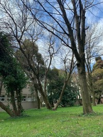

Collocata in posizione felice, di fronte a Villa Querini, da cui la separa il Muson Vecchio, Villa Campello, di probabile origine secentesca, ha struttura imponente caratterizzata all’esterno da un avancorpo in nitido stile neoclassico, risalente ai primi dell’Ottocento sul quale si inseriscono, quale motivo decorativo, i balaustri in ghisa delle finestre e dei balconi. Altro elemento di rilievo è la barchessa, fatta costruire verso la seconda metà del XIX secolo, che, oltre ad una funzione estetica di derivazione palladiana, possiede un'evidente utilità collegata alla produzione agricola. La disposizione degli spazi all’interno è quella classica delle case padronali: un ampio salone centrale di ricevimento con le stanze disposte ai lati. Degni di nota i pavimenti in mosaico e uno stemma di famiglia. Abitata a lungo dalla famiglia Mogno, acquistata poi dalla contessa Maria Campello, la villa, oggi di proprietà del Comune, è sede della Biblioteca civica e della Casa delle Associazioni ed è il cuore della vita culturale cittadina. Il giardino romantico, recentemente restaurato, ne consente un piacevole utilizzo anche nella bella stagione.
